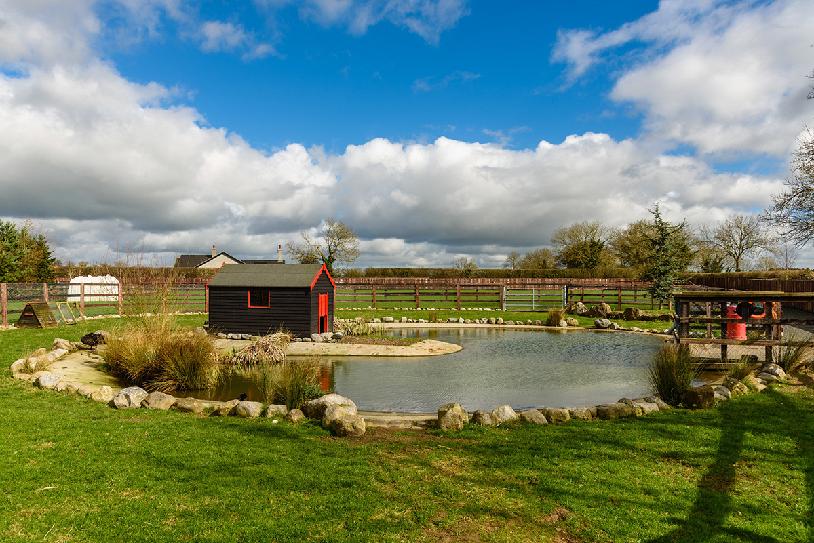

Welcome
We look forward to Welcoming you to our Family Farm. With us, you and your family can experience all that is great about country life. We do not charge visitors to our Open Farm; entry to our farm is Free. We offer visitors a family friendly, buggy and wheel chair accessible destination. Visitors can see a wide variety of animals. We are home to many friendly animals including; Cows, Pigs, Goats, Horses, Chickens, Ducks & Sheep. We also have a Free range shop open to the public where we sell a large rabge of free range Fruit, Veg, Eggs, Milk and Meat products.
